5040C16 AIR CONDITIONER HEATER/DISTRIBUTION UNIT HOUSING - DISMANTLE AT BENCH
- Path
- Procedures > 50 AUXILIARY UNITS > 5040 AIR CONDITIONING CASING AND COMPONENTS > 5040C AIR CONDITIONER BOX AND COMPONENTS > 5040C16 AIR CONDITIONER HEATER/DISTRIBUTION UNIT HOUSING - DISMANTLE AT BENCH
- Kind
- repair procedure (removal / refitting; the operation number is the code)
- Applies to
- all engines; all production periods
- Interactive page
- https://sloeber94.github.io/elrnDB-fUlss/en/#/179007478
Applies to: all engines; all production periods
 Removing
Removing
 Refitting
Refitting- Disconnect the electrical connections.
- Release the air conditioning system cable loom from the fastenings and remove it.
1. Release and remove the bodyshell mounting.
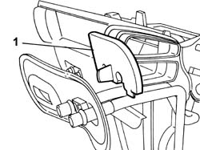
Applies to: all engines; all production periods
1. Undo the retaining bolt.
2. Remove the side pipe guard.
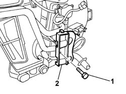
Applies to: all engines; all production periods
1. Release the air conditioning heater radiator and remove it.
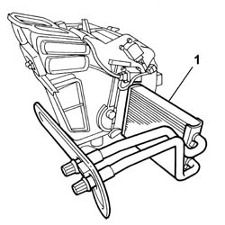
Applies to: all engines; all production periods
- Release the air conditioning system cable loom from the fastenings and remove it.
1. Remove the condensation drainage pipe.
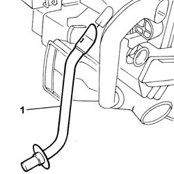
Applies to: all engines; all production periods
1. Release and remove the rear seat duct.
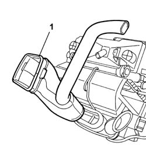
Applies to: all engines; all production periods
1. Undo the fixing bolts (1a) and (1b).
2. Remove the lower cover.
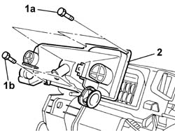
Applies to: all engines; all production periods
- Remove the fastening rivets using a suitable tool.
1. Release and remove the intermediate connector.
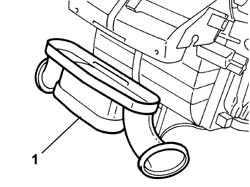
Applies to: all engines; all production periods
1. Undo the fixing bolts (1a), (1b) and (1c).
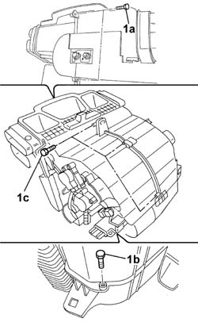
Applies to: all engines; all production periods
1. Disconnect the half casings (1a) and (1b).
2. Release and remove the air conditioning evaporator.
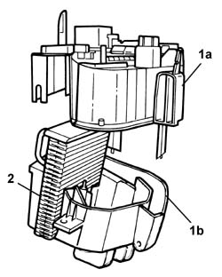
Applies to: all engines; all production periods
1. Release the DUAL ZONE separating partition (1a) complete with rear distribution flap (1b) and remove it.
2. Remove the front distribution flap.
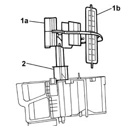
Applies to: all engines; all production periods
1. Separate the rear distribution flap (1a) from the DUAL ZONE partition (1b).
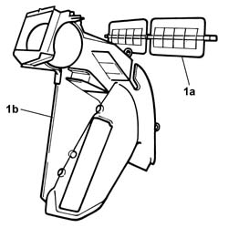
Applies to: all engines; all production periods
1. Undo the retaining bolts.
2. Remove the air distribution flap control motor.
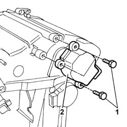
Applies to: all engines; all production periods
1. Undo the retaining bolt.
2. Release the air conditioning system cable loom mounting bracket and remove it.
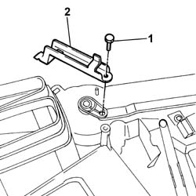
Applies to: all engines; all production periods
1. Release the air distribution flaps control linkage and remove it.
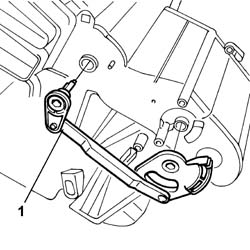
Applies to: all engines; all production periods
1. Release and remove the rear distribution flap control linkage.
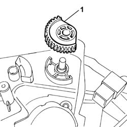
Applies to: all engines; all production periods
1. Undo the retaining bolts.
2. Remove the left mixture flap control motor.
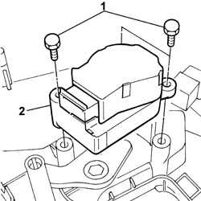
Applies to: all engines; all production periods
1. Release the left mixture flap control linkage and remove it.
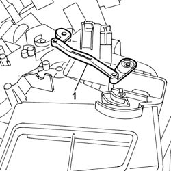
Applies to: all engines; all production periods
1. Release and remove the left mixed air temperature sensor.
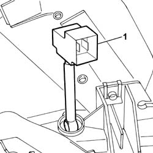
Applies to: all engines; all production periods
1. Release and remove the left upper mixed air flap.
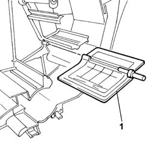
Applies to: all engines; all production periods
1. Release and remove the left lower mixed air flap.
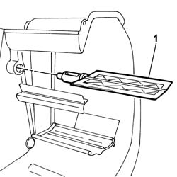
Applies to: all engines; all production periods
1. Undo the retaining bolts.
2. Remove the right mixture flap control motor.
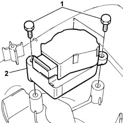
Applies to: all engines; all production periods
1. Release and remove the right mixed air temperature sensor.
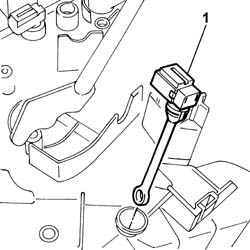
Applies to: all engines; all production periods
1. Release and remove the sensor on the evaporator for the air conditioning system control unit.
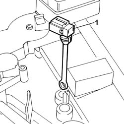
Applies to: all engines; all production periods
1. Release the right mixture flap control linkage and remove it.
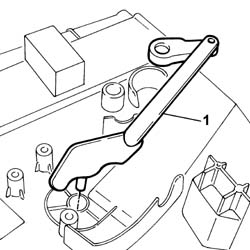
Applies to: all engines; all production periods
1. Release and remove the right lower mixed air flap.
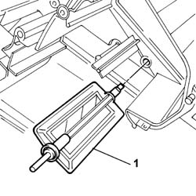
Applies to: all engines; all production periods
1. Release and remove the right upper mixed air flap.
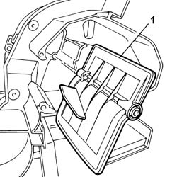
Applies to: all engines; all production periods
Refitting
Removing- Position the right upper mixed air flap.
- Position the right lower mixed air flap.
- Position the right mixture flap control linkage.
- Position the right mixed air temperature sensor.
- Position the right mixture flap control motor and tighten the fixing bolts.
- Position the left lower mixed air flap.
- Position the left upper mixed air flap.
- Position the left mixed air temperature sensor.
- Position the left mixture flap control linkage.
- Position the left mixture flap control motor and tighten the fixing bolts.
1. Position the rear distribution flap control linkage.
2. Position the air distribution flap control linkage (2a) making sure that the tooth (2b) is aligned with the housing (2c).
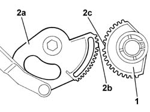
Applies to: all engines; all production periods
- Position the mounting bracket for the air conditioning system cable loom and tighten the fixing bolt.
- Position the air distribution flap control motor and tighten the fixing bolts.
- Position the front distribution flap.
- Positin the rear distribution flap in the special housing on the DUAL ZONE partition.
- Position the rear distribution flap and the DUAL ZONE partition.
- Place the air conditioning evaporator in position.
- Position the half casings and tighten the fixing bolts.
- Place the intermediate connector in position.
- Refit the fastening rivets using a suitable tool.
- Position the lower cover and tighten the fixing bolts.
- Place the rear seat duct in position.
- Place the condesnation drainage pipe in position.
- Place the air conditioning heater radiator in position.
- Fit the pipe side guard in place and tighten the retainining bolt.
- Place the bodyshell mounting in position.
- Position the air conditioning system cable loom.
- Connect the electrical connections.